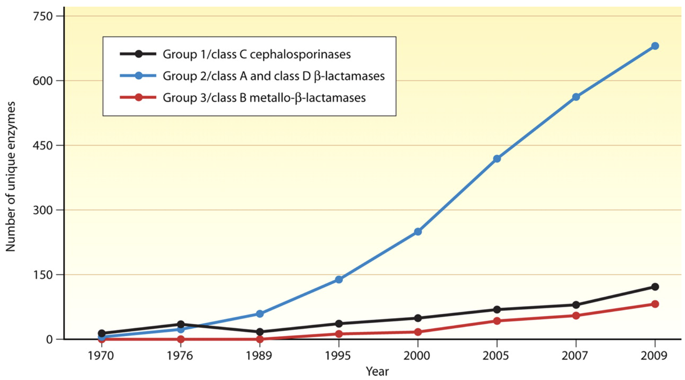

97039 - GLOBAL HEALTH, ANTIMICROBIAL DRUGS AND VACCINES
The Crisis in Antibiotic Development
11/26/2022
The growing crises of antibiotic development
In module 1, we discussed the history of antibiotic discovery and the current challenges with antimicrobial resistance that have been amplified by the lack of development of new antibiotics. In this module, we will examine more closely the scientific and economic challenges associated with antibiotic development, and compare and contrast strategies that have been proposed to stimulate development of new antibiotics.
As we saw in the previous module, antibiotic discovery began to slow in the 1980’s and has lead to a discovery void in new molecular entities (NMEs) since the 1990s. This lack of antibiotic innovation occurred at a critical period when antibiotic resistance, particularly to many frontline beta-lactam antibitiocs began to increase with the emergence and rapid spread of extended-spectrum beta-lactamases.

Figure 1. Increase in numbers of group 1, 2, and 3 beta-lactamases from 1970 to 2009. Figure is from Bush and Jacoby1
AMR is a natural mechanism that allows microorganisms to survive. The process is accelerated by increasing levels of antibiotic use: selective pressure enables the spread of mutations that promote survival, shortening the time bacteria need to acquire resistance to new drugs. This, coupled with low rates of new antibiotic development, has contributed to alarming rates of resistance for selected 1,2 pathogens, including priority pathogens for which few treatment options are available.
Protective mechanisms that have evolved in bacteria include preventing entry of the antimicrobial, producing enzymes that destroy or modify the antimicrobial, and making changes to the antimicrobial target. Some common bacterial enzymes known to result in antibiotic resistance can be categorized as follows:
- narrow-spectrum beta-lactamases, which act on penicillins and first-generation cephalosporins (TEM-1 and 2, SHV-1, cephalosporinases, OXA-type enzymes);
- extended-spectrum beta-lactamases (ESBL), which act on penicillins and all four generations of cephalosporins (SHV-2, SHV-5, SHV-7, SHV-12, TEM-10, TEM-12, TEM-26, CTX-M, OXA-type ESBLs);
- carbapenemases, which act on penicillins, all four generations of cephalosporins, and carbapenems (KPC, NDM-1, VIM and IMP carbapenemases, OXA-type carbapenemases)
However, a growing concern is the increase in carbapenem-resistant Gram-negative pathogens encoded by a range of genes, including NDM-1, OXA-48, KPC, VIM, and IMP. Resistance has rapidly spread globally and across bacterial species since the first reported case in Klebsiella pneumoniae less 6 than a decade ago , demonstrating both our ability to track the spread and the challenges involved in containing it. A similar concern is the emergence of plasmid-mediated genes (mcr-1, mcr-2, mcr-3, mcr-4, mcr-5, 7 and icr-Mo ), which encode resistance to colistin, considered a drug of last resort. MCR-1 was first 8 isolated in 2016 from Escherichia coli cultured from a pig in China, but it has since been reported globally and in numerous bacterial species, including K. pneumoniae and Enterobacter species. Additionally, multiple variants of genes encoding extended-spectrum beta-lactamase (ESBL) and conferring resistance to penicillin, cephalosporins, and monobactam have now spread globally. Reports from major surveillance networks, including EARS-Net in Europe, indicate high prevalence in E. coli and K. pneumoniae. ESBL-positive Gram-negative bacteria are found in livestock, meat 9 products, and companion animals. In Neisseria gonorrhoeae, resistance to the recommended first-line therapy (azithromycin and 10,11 ceftriaxone) has been reported in the United Kingdom and Australia with the UK isolate showing resistance for all antibiotics recommended for the treatment of N. gonorrhoeae. For Staphylococcus aureus and Enterococcus faecium, no major shifts in resistance have been reported for the global molecular epidemiology of genes encoding methicillin resistance (mecA) or vancomycin resistance (vanA and VanB) in the past decade. However, the emergence and spread of methicillin resistance in 12 the form of mecC has also been reported.